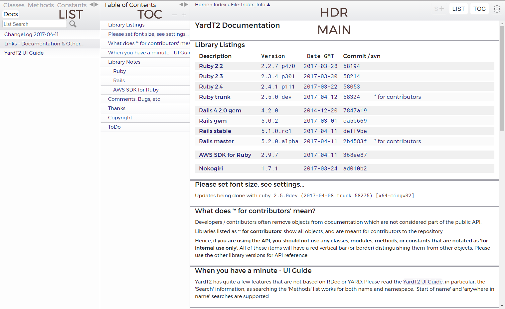
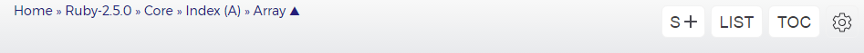
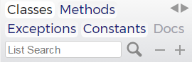
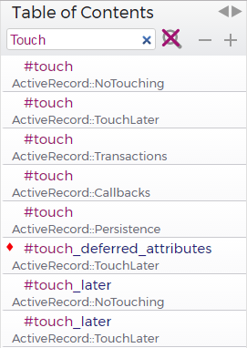
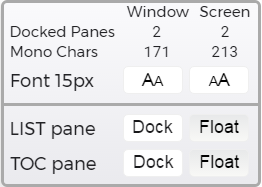

YardT2 User Interface Guide
Introduction
A few years ago, I was using YARD to doc my own code, using a few RDoc based sites as Ruby references, and using some Ruby reference books. Well, I wore the books out, was frustrated when using a tablet, and wished for changes in both YARD & RDoc. So, I started working with YARD, which led to the development of YardT2.
Window Layout
The YardT2 window is composed of three panes and a navigation control header. All three panes are independently scrollable, but will also scroll based on object selection.

- Main document pane (MAIN) - this pane shows the class/module documentation, other documents (md, rdoc, txt, html, etc) included in the library, and the index page.
- 'List' pane (LIST) - This is similar to the YARD and RDoc panes. It shows lists of the library classes/modules, methods, and separate documents. It may also show exceptions, constants and/or other collections/lists.
- 'Table of Contents' pane (TOC) - This pane is generated by javascript on the client, and shows a summary of the current MAIN pane document.
- Header (HDR) - this area (above the main document), has a menu for navigating up the namespace of the MAIN pane object, buttons for the visibility of the LIST and TOC panes, a button for opening / closing all source code listings in the current document, and a button for the settings window.
The LIST & TOC panes can each be left docked, hidden, or floated individually on the right side. Browser window width determines the layout.
- Narrow - will not allow the LIST or TOC panes to be docked
- Medium - will allow only one pane to be docked
- Wide - allows both panes to be docked
Typically, a full screen PC browser will render as wide, a tablet in landscape will render as medium, and a tablet in portrait will render as narrow. The above image shows a 'wide' layout from a PC.
Note that when using a tablet in landscape, if one hides (or floats) both the LIST and TOC panes, the font will enlarge such that source code listings will be a bit over 80 characters wide.
Header Navigation and Controls

The top left has navigation items for the nesting of the current document. The last item is the current document, clicking it will scroll to the top of the document.
On the right are four controls:
| Button Legend | Description |
|---|---|
| S+ (or S-) | Shows or hides all source code listings. Disabled if none present in document. Helpful if using 'find on page' browser text search. |
| LIST | Toggles LIST pane visibility. |
| TOC | Toggles TOC pane visibility. |
| Shows Settings window. |
If both the LIST and TOC are either docked or floating, and one's window width is either narrow or medium, the LIST and TOC buttons can be used to toggle the LIST/TOC pane display (ie, they are mutually exclusive).
LIST Pane Controls

The LIST pane shows collections of items in the library. Typically, this would be three collections:
- Classes - All modules / classes in the library. Items are shown nested by namespace.
- Methods - All methods contained in the library. It may also include constants and/or global variables.
- Exceptions (optional) - if shown, all exception classes are removed from the 'Classes' list and shown in a tree view.
Constants (optional)
Docs - Any additional documents included in the library.
Other collections may also be shown.
Other than the list / collection menu, there are:
- a search text box - allows searching in the current list
- a resizer control - controls the width of the pane
- global tree open/close controls - if the current list is a treeview, the plus and minus controls will open / close all nodes
List Search
Search allows searching both the name of the object and the namespace. The
delimiter is the last namespace delimiter (:: in Ruby).
The search string is divided at that mark; everything to the left is used to search the namespace, everything to the right is used to search the name.
If there is no namespace delimiter, the string is used for name search.
Name Search
Searching allows both 'in string' and 'start of string' searching of the object name. 'Start of string' searching is done by capitalizing the first character of the search name string.
Name search is case insensitive.
When searching the methods list, one can use a period (.) to
restrict the search to class methods, and a hash (#) for instance methods.
Namespace Search
Namespace search is case sensitive. It will also search for more than one term.
In regex terms, a string like Record::ClassMethods:: will use a regex of
/Record([^:]*::[^:]*)+?ClassMethods/ to search the namespace string.
Name Only Search Examples
Class - 'Methods' list - will find all methods starting with class
.Ab - 'Methods' list - will find all class methods starting with ab
#class - 'Methods' list - will find all instance methods whose name contains
class
Namespace Only Search Examples
Record::Class:: - 'Methods' list - will show all methods shown in namespaces
containing Record followed by Class
Combined Search Examples
Active::Class::attr - 'Methods' list - will show all methods shown in namespaces
containing Active followed by Class and whose name contains with attr
Active::ClassMethods - 'Classes' list - will show all classes in a namespace
containing Active, named ClassMethods
TOC Pane Controls
|  | The TOC pane has the same controls as the LIST pane, and allows searching for methods in the current document. When searching for method names, if there are multiple methods with the same name, the results will show them in call order, top called first, then down the list. This is shown at left for Rails ActiveRecord::Base, which is a class with no 'traditional' natively defined methods. At present, method search does not allow namespace search. |
Settings Window
|  | The settings windows allows one to change the font size and locations of the LIST and TOC panes. The pane location settings are for the current window and font size. The location (docked/floating) settings are stored separately for medium and wide window widths. 'Mono Chars' is the number of monospaced characters that fit the window and screen at the current font size. 'Docked Panes' is the number of allowed docked panes. The breaks between narrow/medium/wide are 110 and 160 monospaced characters. |
MAIN Pane Layout and Controls
The main pane shows the current object / document.
Code documents contain the following sections:
Relationships & Source Files
- Namespace Children
- Modules:
- Classes:
- Exceptions:
- Extension / Inclusion / Inheritance Descendants
- Extended In:
- Included In:
- Prepended In:
- Subclasses:
- Super Chains via Extension / Inclusion / Inheritance
- Class Chain: - roughly equivalent to
.singleton_class.ancestors - Instance Chain: - roughly equivalent to
.ancestors
- Class Chain: - roughly equivalent to
- Inherits: - shows inheritance tree for classes
- Defined In: - lists all files that the object is defined in
Overview
Shows comment documentation for the class/module.
Summary Sections
These sections show a summary description of the items (both native and chained) available to the class/module.
The default sections are listed below, but additional sections maybe added by comments.
In Rails libraries, included do calls may add native items to a class / module. These
items are listed by the module that contains the included do call.
- Constant Summary
- Class Attribute Summary
- Class Method Summary
- Instance Attribute Summary
- Instance Method Summary
In each default section, native items are shown first, then the 'super' items, in call order, grouped by owner object. Note that the descriptions are essentially summaries, or the first sentence of the description. Full descriptions and source code are available in the 'Detail' sections. The items names link to the 'Details' section listing, and for 'super' items, lead to another document.
Methods are sorted by:
- nodoc status (if nodoc objects are shown)
- visibility (public, protected, private)
- whether they are module functions or read / write attributes
- alphabetically
Detail Sections
Only native items are show in Detail sections. Full description and source code are shown. Items are sorted alphabetically.
- Constructors
- Class Attribute Detail
- Class Method Detail
- Instance Attribute Detail
- Instance Method Detail
Additional Code Document Notes
The 'Relationships & Source Files', 'Overview', and 'Summary' sections can be collapsed, and the three settings hold for both the session and the site.
Key Assignments
Standard Keys
- If the LIST pane is visible and it is showing the method list, hitting any key will move the list to the top 'first character' match.
- Hitting escape will empty the LIST pane search input box, resetting the LIST pane to the current list. Note that this will not reload the list from the server.
Alt-Control Keys
| Key | Result |
|---|---|
| c | Shows and loads the 'Class List', will show the LIST pane if it's not visible |
| d | Shows and loads the 'Docs List', will show the LIST pane if it's not visible |
| m | Shows and loads the 'Method List', will show the LIST pane if it's not visible |
| i | If 'index' is shown in the header path, it will go to the index page |
| l | Shows / Hides the LIST pane, does not reload |
| s | Set focus to the LIST pane search input box, will show the LIST pane if it's not visible |
| t | Shows / Hides the TOC pane |
Methods
RDoc lists class methods as
::name, YARD uses.name. YardT2 uses.name.In the Method List, TOC and collapsed summary sections, methods are coded with symbols that show their properties, as shown below:
| Symbol | Desc | Symbol | Desc | |
|---|---|---|---|---|
| Protected | Attribute - Read / Write | |||
| Private | Attribute - Read Only | |||
| nodoc | Attribute - Write Only | |||
| Module Function |
Constructors
YARD lists standard constructors (def initialize) as an #initialize instance method,
RDoc lists them as a .new class method. YardT2 uses the .new class form.
Since some code uses both .new and #initialize, YardT2 attempts to list both
in the 'Constructor Details' section.
Note that in modules which have 'constructors' for inclusion, the method is left
as an instance method (#initialize).
Attributes
Any object created via Ruby or c attribute statements is listed as an attribute. Methods are also listed as attributes based on their signature.
For instance, if a method has one required parameter and its name ends with an equal sign (=), it will be considered a write attribute.
Conversely, if both read and write method pairs are created (ie, meth and meth=), they will be listed as attributes only if both are valid attributes – the read method must have no parameters, and the write method must have only one required parameter. If not, they will be listed (together) in the 'Methods' sections.
Any attributes created via attr_accessor (and without any additional code) are only listed via the read name, but will show a read /write symbol in the Method List.
Aliases
All aliases are listed in the summary and detail sections, and also in the method list. Documentation is only listed for the 'main' method, the others link to it. Since Ruby c libraries often create aliases without using an alias 'directive', the code guesses as to which method should be considered the 'main' method.